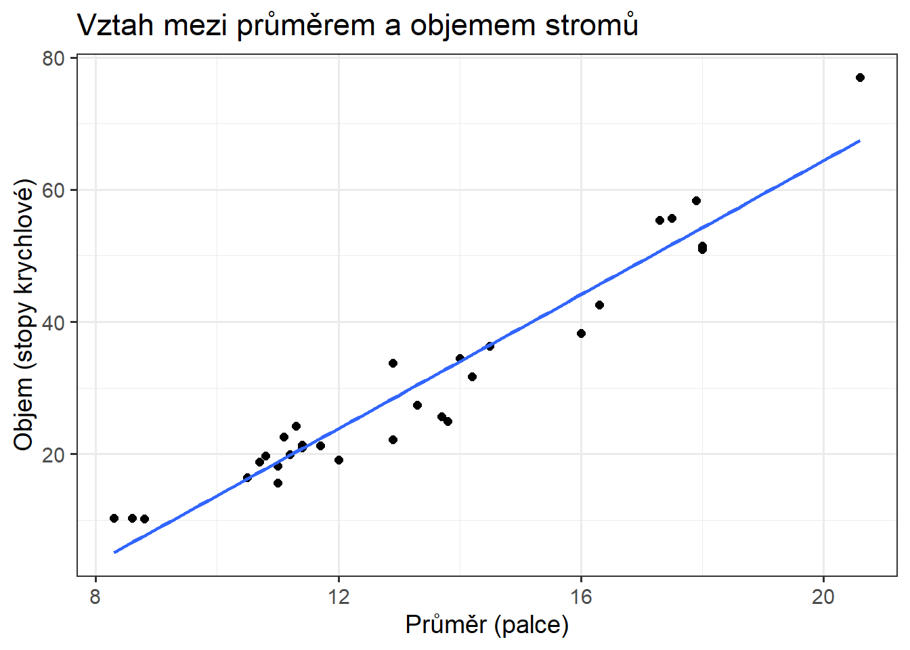
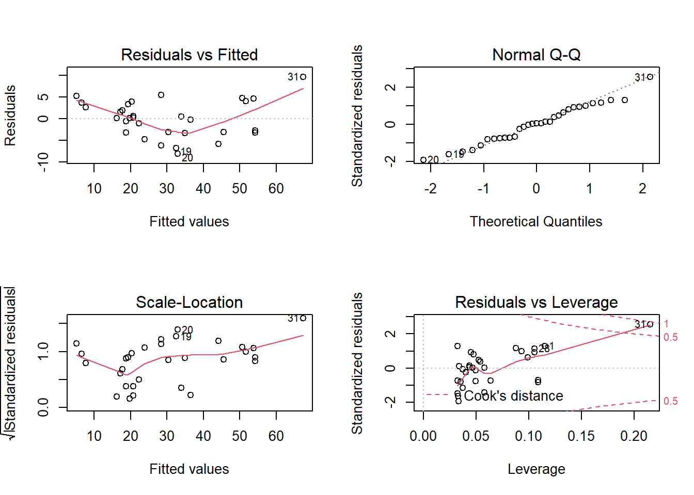
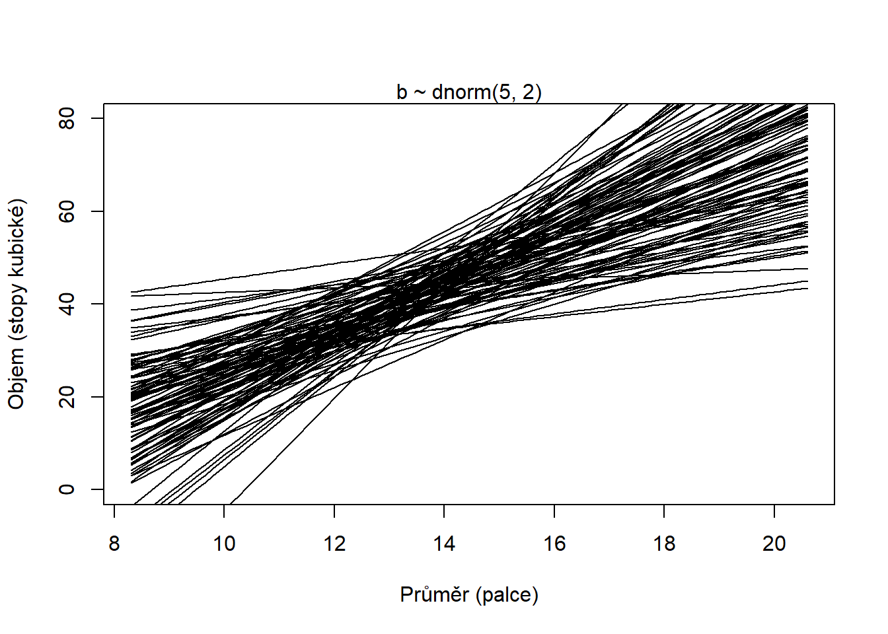
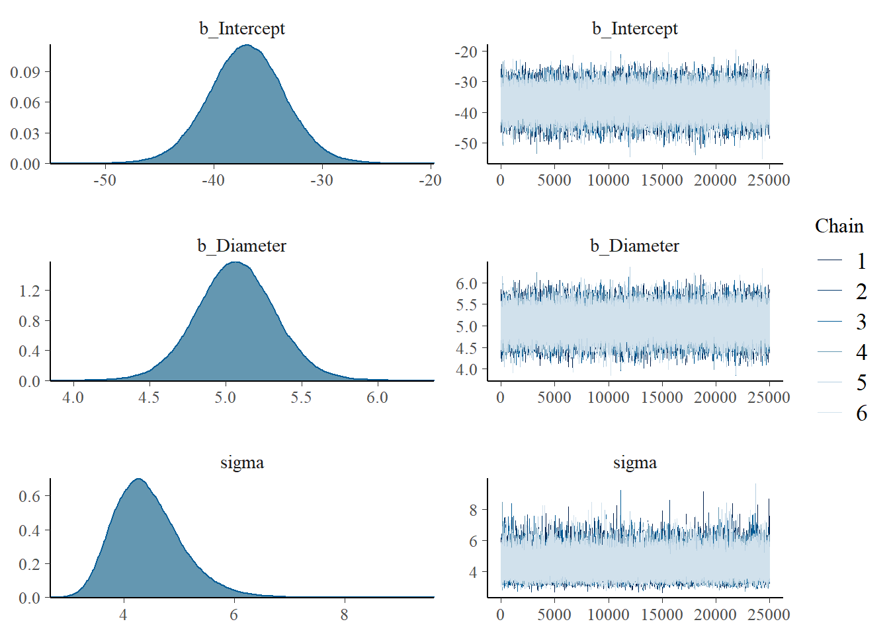
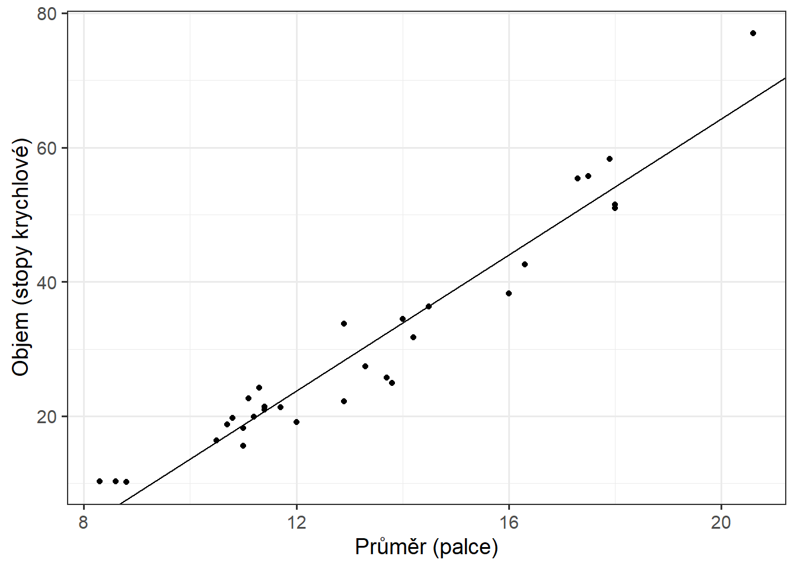
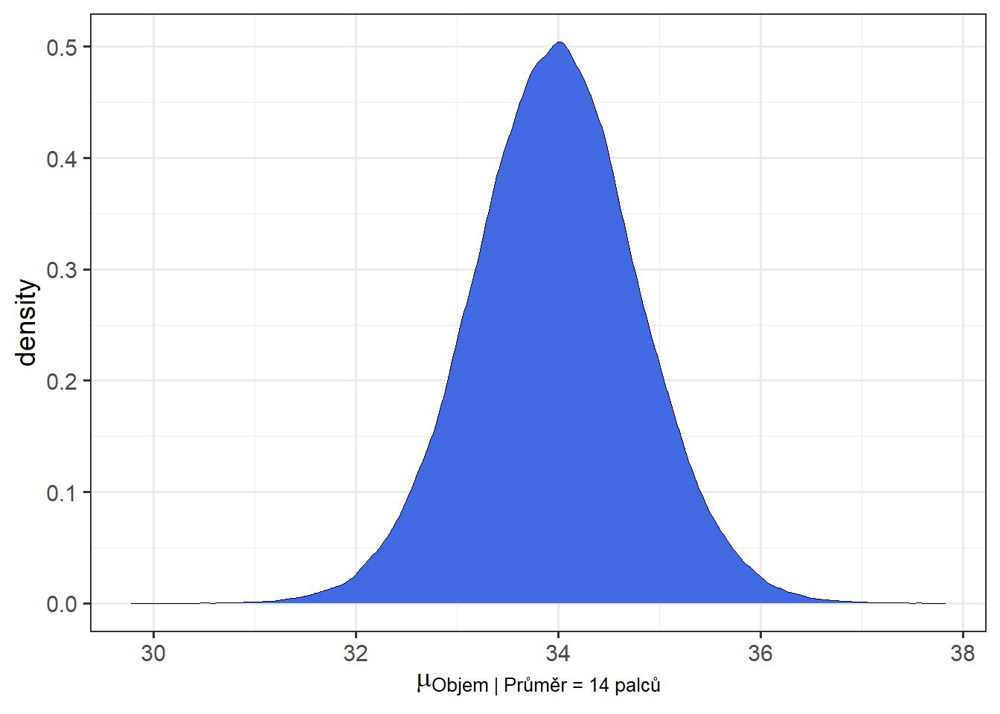
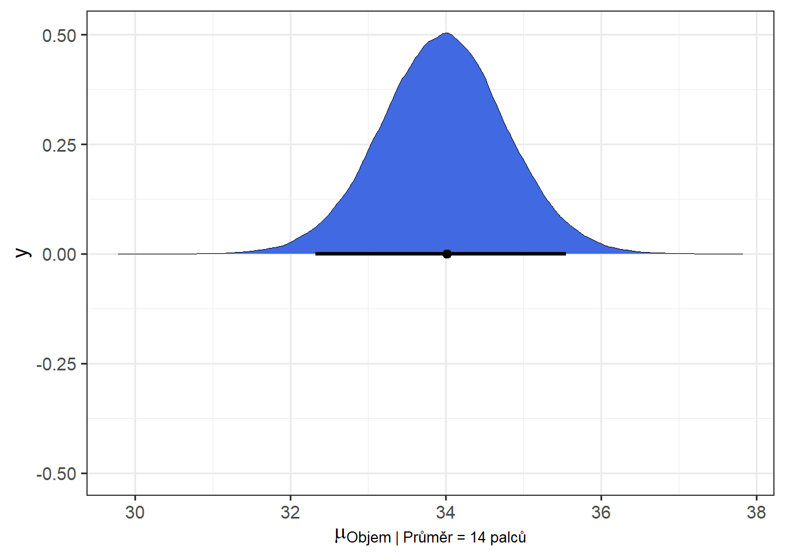

V rámci plnění zápočtu k předmětu “Cvičení z bayesovské statistiky” jsem se rozhodla pracovat s datasetem trees (dostupný v R), který obsahuje informace o průměru, výšce a objemu dřeva u 31 střemch pozdních (černá třešeň). Konkrétně se zaměřím na vztah mezi průměrem a objemem – průměr jako nezávislá proměnná, objem jako závislá proměnná. Sloupec s průměrem jsem na základě doplňujících informací k datasetu přejmenovala z původního “Girth” na vhodnější “Diameter”.
## `geom_smooth()` using formula 'y ~ x'
Bodový graf průměru a objemu naznačuje existenci lineárního vztahu, čímž je splněn první předpoklad pro použití jednoduché lineární regrese. Vztah lze formulovat jako \(Volume_i = \alpha + \beta * Diameter_i\).
model.1 <- lm(Volume ~ Diameter, data = trees)
Graf Residual vs Fitted zkoumá linearitu vztahu. Křivka poukazuje na podhodnocování objemu stromů s menším průměrem, nadhodnocování objemu u stromů se středními hodnotami průměru a opět na podhodnocování u větších průměrů.
Graf Normal Q-Q ukazuje na relativně přijatelně normální rozdělení reziduálů s výraznějšími odchylkami u krajních hodnot.
Scale-Location graf poukazuje na relativně nerovnoměrné rozložení reziduálů (heteroskedasticita) – variabilita reziduálů u nižších predikovaných hodnot kolísá a od určitého bodu se s rostoucími predikcemi zvyšuje.
Poslední graf (Residuals vs Leverage) zvýrazňuje vlivnou extrémní hodnotu.
##
## Call:
## lm(formula = Volume ~ Diameter, data = trees)
##
## Residuals:
## Min 1Q Median 3Q Max
## -8.065 -3.107 0.152 3.495 9.587
##
## Coefficients:
## Estimate Std. Error t value Pr(>|t|)
## (Intercept) -36.9435 3.3651 -10.98 7.62e-12 ***
## Diameter 5.0659 0.2474 20.48 < 2e-16 ***
## ---
## Signif. codes: 0 '***' 0.001 '**' 0.01 '*' 0.05 '.' 0.1 ' ' 1
##
## Residual standard error: 4.252 on 29 degrees of freedom
## Multiple R-squared: 0.9353, Adjusted R-squared: 0.9331
## F-statistic: 419.4 on 1 and 29 DF, p-value: < 2.2e-16Nízká p-hodnota (\(2*10^-16\)) naznačuje, že bychom se v rámci klasického testování hypotéz přikláněli k hypotéze alternativní (existence vztahu mezi průměrem a objemem). Model vyhodnotil, že s nárůstem průměru o 1 palec se objem navyšuje o cca 5.1 stop krychlových. Lineární model dokáže vysvětlit zhruba 94% variability objemu, adjustované \(R^2\) se od koeficientu determinace z povahy modelu příliš neliší.
## 2.5 % 97.5 %
## (Intercept) -43.825953 -30.060965
## Diameter 4.559914 5.571799Konfidenční interval pro beta koeficient (\(\beta\) = 5.07, 95 % CI [4.56, 5.57]) lze v tomto kontextu chápat jako rozmezí plauzibilních hodnot skutečného beta koeficientu, který je neznámý, ale fixně daný, přičemž bychom v rámci opakovaného sběru z dané populace (v tomto případě např. oblasti lesa) mohli očekávat, že 95% z takto sestrojených intervalů bude pokrývat skutečnou hodnotu \(\beta\).
Likelihood modelu:
Priors:
Na základě velmi obecných informací o tomto druhu stromu jsem předpokládala, že průměrná výška se bude pohybovat okolo 20m a průměr kmene zpravidla nepřesáhne 20 palců (cca 50cm). Z těchto hypotetických rozměrů plyne, že objem stromů by povětšinou neměl přesáhnout 80 stop krychlových. Usoudila jsem, že by objem mohl být distribuovaný okolo průměru \(30ft^3\) se směrodatnou odchylkou \(5t^3\).
Předpokládala jsem, že sklon \(\beta\) bude spíše pozitivní, přičemž by změna průměru o 1 palec měla vést jen k poměrně malé změně objemu ve stopách krychlových. Směrodatnou odchylku jsem opět zvolila širší.
Prior pro \(\sigma\) jsem zvolila nepříliš informativní half-cauchy distribuci s parametrem A = 20.
Prior predictive check:
set.seed(123)
n <- 100
a <- rnorm(n, 40, 5)
b <- rnorm(n, 5, 2.2)
plot( NULL , xlim=range(trees$Diameter) , ylim=c(0, 80) ,
xlab="Průměr (palce)" , ylab="Objem (stopy kubické)" )
mtext( "b ~ dnorm(5, 2)" )
xbar <- mean(trees$Diameter)
for ( i in 1:n ) curve( a[i] + b[i]*(x - xbar) ,
from=min(trees$Diameter) , to=max(trees$Diameter) , add=TRUE)
Graf vytvořený v rámci pror predictive check působí relativně vhodně, většina regresních přímek je přijatelná. Výjimku tvoří menšina přímek, která zobrazuje nulový či záporný objem při nenulovém průměru.
set.seed(549)
model.2 <- brm(data = trees, family = gaussian,
Volume ~ 1 + Diameter,
prior = c(prior(normal(30, 5), class = Intercept),
prior(normal(5, 2.2), class = b),
prior(cauchy(0, 20), class = sigma)),
iter = 40000, warmup = 15000, chains = 6, cores = 6, seed = 234)plot(model.2)
## Estimate Est.Error Q2.5 Q97.5
## b_Intercept -36.948233 3.5184854 -43.890633 -30.022446
## b_Diameter 5.065769 0.2587522 4.555884 5.577106
## sigma 4.436086 0.6145351 3.425480 5.823274Posterior summary ukazuje bodový odhad parametru \(\alpha\), tedy interceptu, na ~ -37, přičemž 95% posterior probability interval (“compatibility interval”) má dolní hranici -44 a horní hranici -30. To znamená, že objem imaginárního stromu s nulovým průměrem by měl s 95% pravděpodobností spadat do tohoto rozmezí hodnot. Bodový odhad \(\beta\), tedy nárůst objemu se zvýšením průměru o jeden palec, byl modelem určen jako cca 5,1 s 95% compatibility intervalem mezi 4.56 a 5.57.
Regresní přímka + data:

Nyní vykreslíme na grafu predikce průměrného objemu pro strom s průměrem o 10 palcích:
post <- posterior_samples(model.2)## Warning: Method 'posterior_samples' is deprecated. Please see ?as_draws for
## recommended alternatives.mu_at_14 <- post %>%
transmute(mu_at_14 = b_Intercept + b_Diameter * 14)
ggplot(data = mu_at_14,
aes(x = mu_at_14)) +
geom_density(size = 0, fill = "royalblue") +
labs(x = expression(mu["Objem | Průměr = 14 palců"])) +
theme_bw(base_size = 14)
89% a 95% Highest posterior density interval (HPDI):
mean_hdi(mu_at_14[,1], .width = c(.89, .95))## y ymin ymax .width .point .interval
## 1 33.97253 32.68551 35.28306 0.89 mean hdi
## 2 33.97253 32.32579 35.54965 0.95 mean hdi95% HPDI pro průměrný objemu stromu s průměrem 14 palců leží má dolní hranici 32,4 a horní hranici 35,6 stop krychlových.
Vykreslení 95% HPDI na density grafu:
ggplot(data = mu_at_14,
aes(x = mu_at_14)) +
geom_density(size = 0, fill = "royalblue") +
stat_pointinterval(aes(y = 0),
point_interval = mode_hdi, .width = .95) +
labs(x = expression(mu["Objem | Průměr = 14 palců"])) +
theme_bw(base_size = 14)